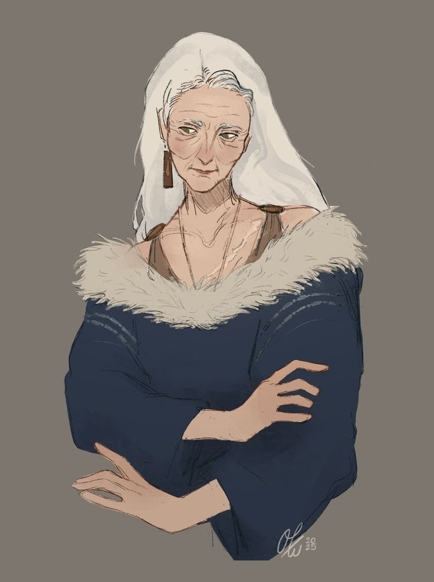
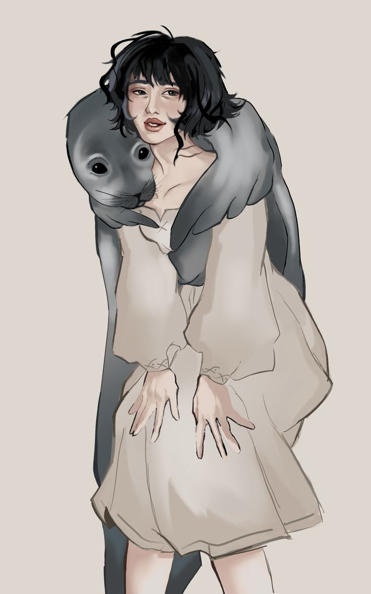

A Dinastia Selkie é a família real que governa o Reino de Leskie desde que a deusa incinerada foi elevada à divindade e sua linhagem, ao trono. Seus membros carregam títulos ligados às marés — cheias para quem governa, e um nome próprio de futuro para quem ainda espera a coroa. O sangue Selkie é o sangue do mar que um dia engoliu a fome do reino.
✦ nomenclaturas reais
Os Títulos da Linhagem
EBBTIDE
Maré Vazante
Título concedido ao Antigo Monarca — aquele que já governou e cedeu o trono. A maré que recua e deixa a areia exposta, mas nunca deixa de pertencer ao mar.
HIGHTIDE
Maré Cheia
Título do Monarca Atual — a maré no seu ponto mais alto, que cobre tudo e a todos. Governa no ápice do poder.
FLOODTIDE
Maré Enchente
Título do Futuro Monarca — a maré que ainda sobe, anunciando o que está por vir. Carrega o peso de uma coroa que ainda não é sua, mas que inevitavelmente virá.
SEAFOAM
Espuma-do-Mar
Título genérico para membros reais que não ocupam posição de sucessão direta. Parte da onda, mas não seu centro.
✦ A RAINHA DO SUL

✦ família real selkie
Anno Selkie
Filha direta da deusa Leskie, ela é uma rainha solitária e gentil. Não realiza muitas aparições ao público e prefere ser vista caminhando sozinha pelo litoral — como se ainda escutasse, entre uma onda e outra, o eco de uma mãe que o próprio povo lhe tirou.
✦ A HERDEIRA

✦ família real selkie
Zuzen Selkie
Filha de Anno, ela vive quase que diretamente com o povo, com uma inocência de quem ainda não conhece os males do mundo — o oposto da mãe reservada, mas talvez seja essa a única forma que encontrou de se aproximar do mar que a avó lhe deixou.